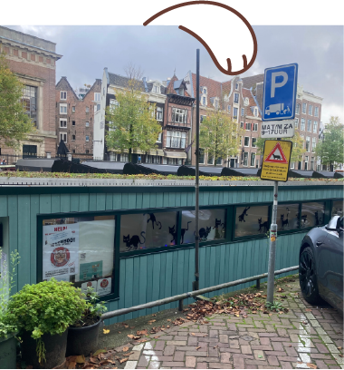
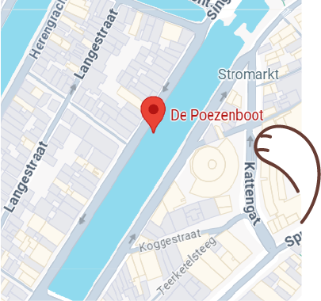
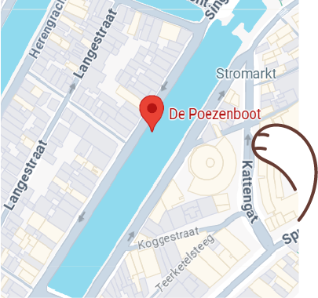

Over de Poezenboot
Elke dag worden er katten achtergelaten om verschillende redenen. Mensen kunnen het niet meer betalen, de kat heeft gedragsproblemen, etc. Bij de Poezenboot proberen ze zoveel mogelijk van deze katten de helpen.
Mijn ervaring
De boot ligt aan de Singel, in de buurt van Amsterdam Centraal (ongeveer 10 minuten lopen).
Toen ik bij de Poezenboot langs ging, stond er een flinke rij. Ze zijn namelijk maar een paar dagen per week open, en dan ook maar 2 uur per dag. Na ongeveer een half uur in de rij gestaan te hebben, kon ik naar binnen.
Binnen lopen alle katten die daar klaar voor zijn vrij rond. Alle katten die nog wat angstiger zijn zitten in hun kooien. Ook hebben ze een klein buitenverblijf. Het is een leuke manier om kennis te maken met de katten.
Doneren
Bij de Poezenboot is een non-profitorganisatie en is afhankelijk van uw donaties. De katten hebben uw steun nodig, dus klik hieronder om direct te doneren!
 

Locatie
Singel 38G
1015 AB
Amsterdam